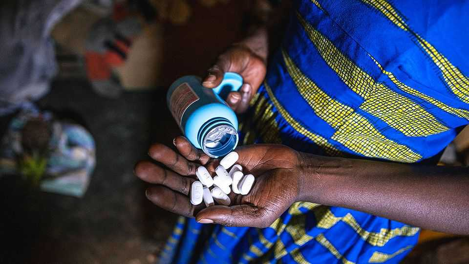

How poor countries are dealing with America’s AIDS cuts
They will have less money and more responsibilities, even as scientists chase a cure

Aug 6th 2026
DON’T PUT all your eggs in one basket. That was the lesson learned by the world’s AIDS establishment on January 20th 2025. Since 2011 America’s share of foreign aid aimed at combating the epidemic had risen from 58% to 81%. So when Donald Trump changed the rules of engagement, the result was a chaos of shuttered clinics, shattered drug-supply chains and suddenly resourceless support groups.
The dust has now settled. The task ahead is for activists, bureaucrats, doctors, politicians and researchers to make the best of the new reality. They have tools: in particular, a pipeline of promising drugs. They have a clear steer from America’s government about how it sees the future. And they also have some early but intriguing results from scientists looking beyond prevention and treatment towards the El Dorado of an actual cure.
To that end the establishment’s bigwigs met at the end of July in Rio de Janeiro, for the 26th International AIDS Conference, a biennial pow-wow. The choice of venue was apt. Brazil has, right from the epidemic’s beginning, been an exemplar of how to deal with AIDS. It has provided free access to antiretroviral (ARV) drugs and forced licensing for the local manufacture of those drugs. Brazil can afford this. For many less-well-provided countries, particularly in Africa, necessity is going to have to be the mother of invention.
On the ground, the need is still great. According to UNAIDS, the arm of the UN that deals with the disease, 570,000 people died of AIDS last year, with the largest share in sub-Saharan Africa. Around 1.2m others were infected with HIV, the virus that causes the disease. Of the 41m currently estimated to be living with HIV, only 32m are on ARVs.
However, bad things have happened since Mr Trump’s executive order. A report by the Kaiser Family Foundation, a think-tank, published on July 27th concluded that American funding has fallen by $2.1bn, representing a 25% fall in the overall amount spent in 2024. Another, by the Foundation for AIDS Research, an international charity, surveyed organisations working with PEPFAR, America’s chief anti-AIDS initiative. It found that 23% were unable to obtain condoms, 20% could not get ARVs and 22% were unable to obtain pre-exposure prophylactic (PrEP) drugs, which prevent infection.
But even after the drop in funding America remains by far the biggest contributor. Changes in the way its money is disbursed are very important. So, though the new policy has been in place since last September, the State Department sent Jeffrey Graham, PEPFAR’s acting head, to Rio to clarify the details.
There are three important shifts. The first is that PEPFAR will no longer hand cash directly to organisations in recipient countries. Instead, things will be done government to government, based on memoranda of understanding (MOUs) about each recipient’s spending plans. The second is that recipients’ financial contributions are specified in the MOUs along with America’s. The third is that the MOUs are time-limited. They last until 2030, with at least the aspiration that from then on American assistance will shift to being technical rather than financial.
Some see a good-faith attempt both to do the best with available resources and to execute at last the handover, long-promised, of responsibility from donors to recipients. Others see a sleight of hand intended to shuffle off budgetary responsibility in as seemly a manner as possible.
So far 34 countries have signed an MOU. Kenya’s government has promised to pitch in $850m to its plan, compared with America’s $1.5bn; Nigeria will contribute $3bn to America’s $2bn. Some countries, such as Ghana, Zambia and Zimbabwe, are refusing to sign, citing what they say are demands for unreasonable levels of data sharing, and amid reports of pressure to concede mineral rights—things that Mr Graham denies are true.
How the new policy pans out will depend on whether the recipients are able to honour their sides of the bargain and the attitude of America’s next president. Mr Graham was vague about what would happen to places which did not stump up their agreed sums, suggesting it would depend on the circumstances. The future of the White House is anyone’s guess.
On the matter of tools, all eyes are focused on PrEP, which both protects individuals from infection and helps break the chain of transmission. The first PrEP drug was a daily pill called Truvada. That was followed by Cabotegravir, an injection given every two months. The current star is Lenacapavir, a twice-yearly injection to which America’s Food and Drug Administration gave its blessing in June 2025. There is also much excitement about Alimatravir, a monthly pill. Although it has yet to finish its clinical trials Merck, which makes it, has already signed deals in several parts of the world, including Africa, to produce it for sale cheaply.
Lencapavir’s ascent is being helped by the Global Fund, an AIDS-fighting organisation funded partly by America in an arrangement separate from its deals with individual countries. The fund announced in July 2025 that it had arranged with Lenacapavir’s maker, Gilead Sciences, to buy enough doses for 2m people—a number raised this April, with extra American money, to 3m. But it would be good if that number went up still further, for UNAIDS estimates that, around the world, some 20m people would benefit from PrEP.
Prevention and treatment, though, are not the same as cure, something that has eluded scientists for decades. But maybe, just maybe, not for much longer. The key, as a panel moderated by Sarah Fidler, of Imperial College, London, discussed, may be a group of molecules called broadly neutralising antibodies (bNAbs). Most of the antibodies people’s immune systems generate in response to HIV are specific to a particular strain of the virus, and thus lose their potency as it virus evolves. But bNAbs target bits of the virus that are so crucial that evolution has much less leeway to change them.
The idea of using bNAbs as drugs to control hidden reservoirs of HIV within the body that conventional medicines cannot reach has been around for many years. Trials now suggest there might be something in the idea. Though most participants receive only temporary relief, in some of them the effects last longer. In a few cases recipients continue to have no detectable virus load after almost two years. That is far longer than the antibodies themselves could hang around, which suggests they have somehow trained the immune system to carry on the good work in their absence. This may, depending on your level of optimism, be either clutching at straws, or a straw in the wind. Even if it is the latter, it is a long way from an actual medicine. But it is hope. ■